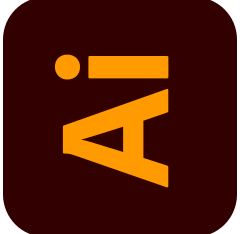
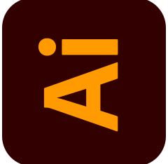
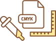

overview

문구디자이너 도아너
다양한 문구용품을 디자인하는 '문구디자이너' 라는 직업을 소개하는 인포그래픽으로,
통계학적 데이터와 해당 직업을 실제로 경험했던 내용을 기반으로 제작하였습니다.
-
디자인 유형
정보 (인포그래픽)
-
기여도
100%
-
작업 시기
2019.05 - 06
-
사용 툴
 

-
컬러 모드
CMYK
-
사이즈
A3
about doaner
About Doaner
디지털 세상 속 아날로그,
다이어리 꾸미기의 흥행
학창시절, 친구들과 예쁜 문구용품들을 교환하던 때가 있었습니다.
당시엔 하나의 놀이에 불과했지만 현재는 시장이 형성되었고 그 범위는 점점 확대되고 있습니다.
이처럼 다양한 디자인의 문구용품들이 새롭게 생겨난 배경 속엔 도아너 라는 직업이 있어 가능한 일 입니다.
문구 제품을 인쇄 규격에 맞춰
그림으로 나타낸 것
도안을 구상하고 창조하는 자
문구 제품을 전문으로 하여
제작하는 창작자
도아너는 '다이어리 꾸미기'라는 취미활동을 통해 윤곽을 드러내기 시작했습니다.
과거의 꾸미기 용품들은 기업에 의해 일방적으로 생산되는 제품들로 제한된 취미생활을 즐겼다면
현재는 개인이 주최가 되어 본인만의 개성이 드러난 다양한 디자인 용품들을 여러 인쇄업체를 통해 제작할 수 있게 됨에따라
전문성을 갖춘 디자이너들이 점차 이곳에 자리를 잡게 된 것이죠.
design concept
Design Concept
sketch
배경의 컨셉을 도아너들이 만든 다이어리꾸미기 용품이 즐비한 책상 위라는 내용을 바탕으로 러프 스케치를 사전에 진행하였습니다.
color
강조색
난색의 따뜻한 색감은 다이어리 꾸미기에 대한 정성가득한 마음과 문구에 대한 강렬한 사랑을 내포합니다.
주조색
텍스트, 그림자 등에 사용되는 색으로 테마색의 계통은 유지하면서 명도대비를 주었습니다.
icon
특수 직종인 만큼 직접 제작 하였으며, 색상은 컬러 시스템을 기준에 따릅니다.
- 